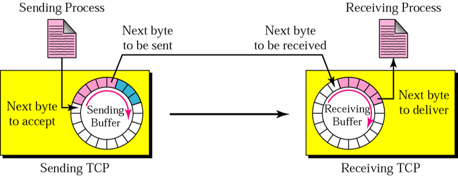

TCP ( Transmission Control Protocol )
TCP operates at the transport layer (Layer 4) and provides a reliable, ordered, and error-checked communication service between applications running on different hosts connected via an IP network
- Like UDP, TCP uses port numbers as transport layer Address.
- If an application can use both UDP and TCP, the same port number is assigned to this application.
- TCP is described as a stream-oriented protocol, it means that it treats the data being sent between two applications as a continuous, ordered sequence of bytes (or octets), rather than as a series of distinct messages or packets.
- TCP creates an environment in which the two processes seem to be connected by an imaginary “tube” that carries their data across the Internet.
- Buffers are needed for storage, because the sending and receiving processes may not produce and consume data at the same speed.
-
There are to buffers, one for each direction
